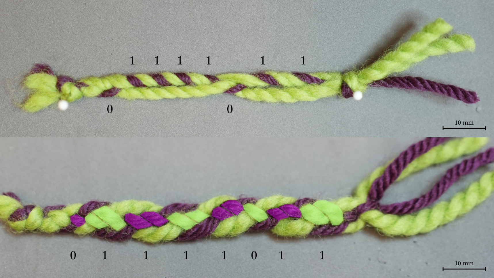
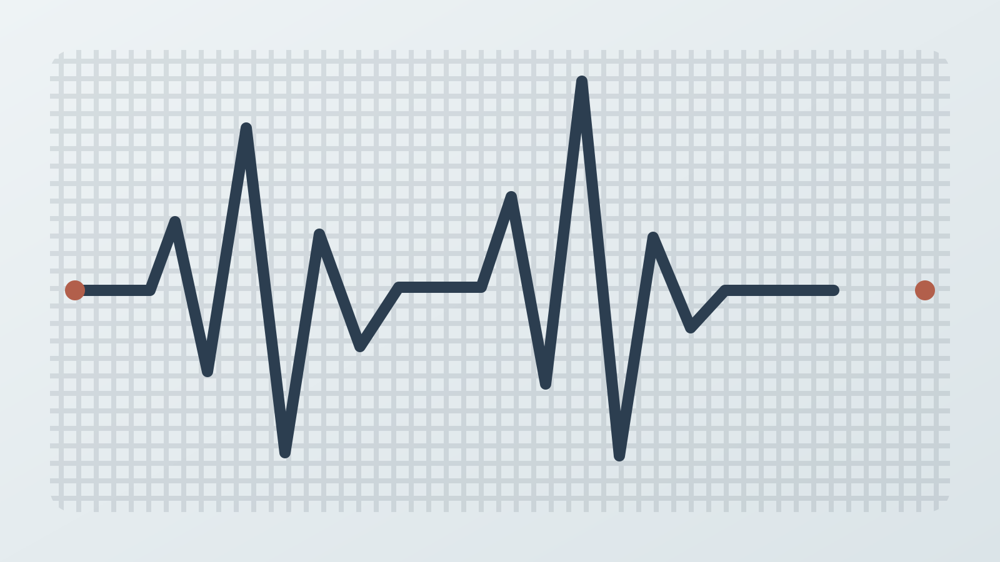
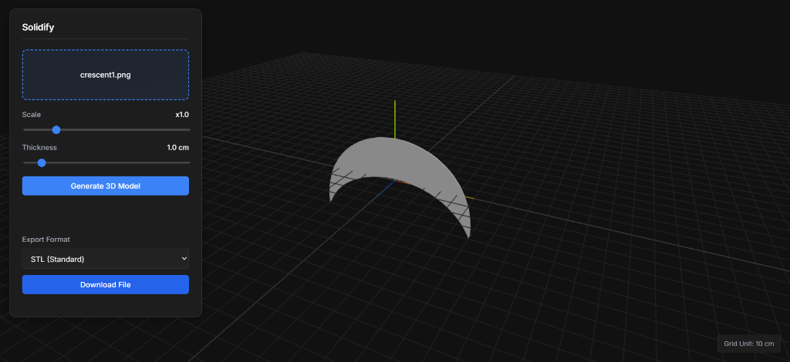

Research Project
Knitted Acoustic Barcode
A knitted barcode that embeds binary data in the spacing of raised garter regions and reads it with a contact microphone.
View ProjectResearch prototypes and digital tools exploring textiles, sensing, fabrication, and interaction.
Research Project
A knitted barcode that embeds binary data in the spacing of raised garter regions and reads it with a contact microphone.
View Project
Research Project
An embroidery method that hides data in stitch lengths and markers, then reconstructs it through image processing.
View Project
Research Project
A braided-cord code that stores information through changes in color pattern and structural segment length.
View Project
Research Project
An acoustic-only fabric recognition prototype that classifies materials from vibrations produced by a simple swiping probe.
View Project
Web Application
A web application that generates and previews 3D models from 2D images, then exports them as STL or OBJ files.
Open Website